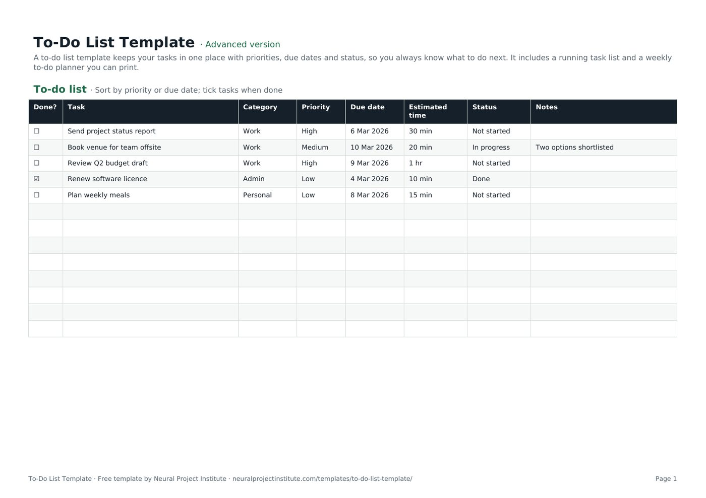

Templates · Meetings & productivity
Free To-Do List Template (Daily & Weekly) for Sheets, Excel, PDF
A to-do list template keeps your tasks in one place with priorities, due dates and status, so you always know what to do next. It includes a running task list and a weekly to-do planner you can print.

Free download · no sign-up
Get the to-do list template
Pick your level and format: Google Sheets, Excel or a print-ready PDF. Spreadsheets include dropdowns, formulas and sample rows you can overwrite.
To-Do List Template preview
| Done? | Task | Category | Priority | Due date | Estimated time | Status | Notes |
|---|---|---|---|---|---|---|---|
| ☐ | Send project status report | Work | High | 6 Mar 2026 | 30 min | Not started | |
| ☐ | Book venue for team offsite | Work | Medium | 10 Mar 2026 | 20 min | In progress | Two options shortlisted |
| ☐ | Review Q2 budget draft | Work | High | 9 Mar 2026 | 1 hr | Not started | |
| ☑ | Renew software licence | Admin | Low | 4 Mar 2026 | 10 min | Done | |
| ☐ | Plan weekly meals | Personal | Low | 8 Mar 2026 | 15 min | Not started |
Sample rows are examples: replace them with your own.
What's included
- A running to-do list with checkbox, category, priority, due date, time, status and notes
- A weekly to-do list planner
- Printable to-do checklist PDF
- To-do list: Done?, Task, Category, Priority, Due date, Estimated time, Status, Notes
- Weekly planner: Day, Top 3 priorities, Other tasks, Done
How to use the to-do list template
- Write every task down, starting each with a verb.
- Set a priority and due date; add a time estimate for bigger tasks.
- Each morning, pick your top three from the list (or use the Weekly planner).
- Tick tasks off as you finish them.
- Review the list weekly: delete, delegate or reschedule old items.
Tips for getting the most from it
- Break big tasks into steps you can finish in under an hour.
- Do the hardest high-priority task first.
- Keep one list, not several.
- For shared work, use a project tracker.
Learn more
Frequently asked questions
What is a to-do list template?
A to-do list template is a ready-made list for recording tasks with priorities, due dates and status so you can plan and track your work.
Is this to-do list template free?
Yes. The to-do list template is free in Google Sheets, Excel and PDF.
Is there a weekly to-do list template?
Yes. The Weekly planner tab is a weekly to-do list template with daily top-three priorities.
Can I use the to-do list template as a daily to-do list?
Yes. Filter by due date for today, or use the Weekly planner for a daily to-do list.
Can I print the to-do list template?
Yes. Download the PDF for a printable to-do checklist template.
How do I prioritise tasks in the to-do list template?
Set High, Medium or Low priority and sort the to-do list by priority, then due date.
Is there a to-do list template in Excel?
Yes. Download the .xlsx to-do list template with dropdowns and filters.
Can I use the to-do list template in Google Sheets on my phone?
Yes. Make a copy of the Google Sheets to-do list template and use the Sheets app.
What is the difference between a to-do list template and a task list template?
They are the same idea; a task list template may add owners for team use, as in our project tracker.
Can teams share a to-do list template?
Yes. Add an Owner column or use a shared Kanban board template.
What is the difference between the beginner, advanced and expert to-do list template?
The beginner to-do list template keeps only the essential columns on one tab; the advanced version is the full template with every tab, dropdown and formula; the expert version adds instructions, a dashboard that summarises your data automatically, status colours and a revision history.